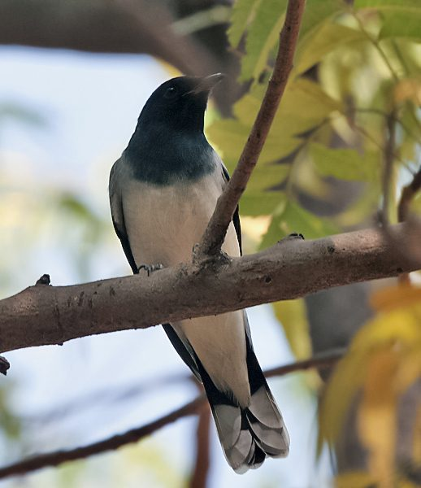

कास्याBlack-headed Cuckooshrike
Coracina melanoptera · Campephagidae · BRD-0304

- Scientific name वैज्ञानिक नाम
- Coracina melanoptera (Rüppell, 1839)
- Family कुल
- Campephagidae
- Hindi हिंदी
- कास्या
- Local names स्थानीय नाम
- kasya, black-headed cuckooshrike
- Status here यहाँ की स्थिति
- native
- Movement आवागमन
- Resident; numbers rise with migrants
- Known from कहाँ दर्ज
- Others have published records from the Basti–Ayodhya districts बस्ती–अयोध्या के ज़िलों से दूसरों के प्रकाशित अभिलेख
- IUCN IUCN
- LC
- Review समीक्षा
- not yet reviewed
When to look कब देखें
Expected mainly in March, April, May, June, July, August, September, October. मुख्यतः मार्च, अप्रैल, मई, जून, जुलाई, अगस्त, सितंबर, अक्टूबर में अपेक्षित।
Resident and seasonal partial migrant in northern and peninsular India, wandering locally following breeding and monsoon patterns. All migrants and visitors →
Tell it apart from इनसे अलग पहचानें
कास्या / Black-headed Cuckooshrike
Coracina melanoptera (Rüppell, 1839) — Campephagidae
कास्या — अवध के बाग-बगीचों, आम की अमराइयों और खुले जंगलों में पाया जाने वाला एक सुंदर और शांत पक्षी है। नर का पूरा सिर और गला गहरे काले रंग का होता है, जबकि उसका शरीर हल्का स्लेटी और पेट सफेद होता है। मादा का सिर काला नहीं होता बल्कि उसका पूरा सीना और पेट पतली-पतली धारियों से भरा होता है। यह पेड़ों की डालियों और पत्तों के बीच चुपचाप रेंगती हुई सुंडियों और कीड़ों को खाकर बागानों की रक्षा करती है।
Quick Identification त्वरित पहचान
| Feature | Description |
|---|---|
| Habit | Slender, arboreal insectivorous passerine of canopies and groves |
| Male head | Entire head, neck, chin, and upper breast jet-black |
| Male body | Upper back and mantle pale grey; abdomen, vent, and undertail coverts pure white |
| Female plumage | Ashy-grey above without black hood; underparts finely barred with dusky streaks |
| Wings | Black with broad grey and whitish margins and wing-patches |
| Tail | Central feathers grey; outer rectrices black with clean white tips |
| Demeanour | Quiet, deliberate; hops slowly through leafy branches without haste |
Field tip: Look in mature mango topes, roadside neem trees, and orchard edges during the breeding season. The male's contrasting black hood against a soft grey back and pure white belly is unmistakable. The female resembles an immature cuckooshrike with finely barred breast and underparts.
हिंदी:
नर का पूरा सिर और गला काला, पीठ स्लेटी और पेट दूधिया सफेद होता है।
मादा के सिर पर काला रंग नहीं होता और उसके पूरे सीने पर धारियां बनी होती हैं।
यह पेड़ों की पत्तियों में छिपी सुंडियों को बहुत फुर्सत से खोजकर खाती है।
Morphology आकारिकी
Measurements as given by Baker (1924 as Lalage sykesii):
| Measurement | Range |
|---|---|
| Wing | 98–110 mm (Baker 1924) |
The Black-headed Cuckooshrike is a medium-sized, sleek arboreal bird exhibiting marked sexual dimorphism. In the adult male, the entire head, neck, upper back, and throat are solid jet-black, forming a well-defined hood that terminates sharply at the breast. The mantle, scapulars, lesser wing-coverts, and rump are pale grey, shading into paler greyish-white on the upper tail-coverts. The flight feathers are black, edged and tipped with greyish-white. The central tail-feathers are grey; the outer feathers are black with broad white tips. The lower breast and flanks are pale grey, fading to pure white on the belly and undertail coverts.
In the adult female, there is no black on the head. The upper plumage is uniform grey, paler on the rump. The chin and throat are greyish-white, and the entire breast, flanks, and belly are finely barred with narrow blackish-brown wavy bands.
The bill, legs, and feet are black. The iris is dark brown to reddish-hazel.
Vocalisations. A quiet bird throughout most of the year. During the summer breeding season, the male utters a pleasant, musical whistling song, often described as a clear, repeated, slightly plaintive trisyllabic whistle.
हिंदी:
नर के सिर पर काली टोपी जैसी छटा होती है जबकि मादा के पेट पर आड़ी धारियां होती हैं।
इसकी चोंच और पैर काले होते हैं।
गर्मी के दिनों में नर पेड़ की फुनगी पर बैठकर मीठी सीटी जैसी तान छेड़ता है।
Behaviour & Ecology व्यवहार और पारिस्थितिकी
Coracina melanoptera is predominantly an arboreal, canopy-foraging bird. It frequents open but well-wooded countryside, mature orchards, forest edges, and village commons. It avoids both dense unbroken rainforest and completely treeless plains.
It moves deliberately through tree foliage, inspecting leaves, bark crevices, and terminal twigs with slow, methodical hops. Unlike drongos or flycatchers, it rarely sallies into the open air for flying insects; instead, it gleans resting caterpillars and grubs directly from foliage. It is generally encountered singly or in pairs, never forming noisy flocks.
हिंदी:
यह घने जंगलों के बजाय खुले बगीचों और पेड़ों वाली जगहों पर रहना पसंद करती है।
यह डाल-डाल पर धीरे-धीरे घूमकर पत्तों के नीचे छिपे कीड़ों को चुनती है।
Life Cycle / Phenology जीवन चक्र
Baker (1924, p. 341) records breeding in peninsular India and the Deccan from June to August, and in Ceylon during March and April. The nest is a shallow cup of fine rootlets and slender twigs bound with cobwebs in an upright branch fork.
The clutch is small. Both parents participate in caring for the brood in leafy woodland canopies.
हिंदी:
बेकर (1924) के अनुसार इसका प्रजनन काल जून से अगस्त के बीच होता है। यह पेड़ों की दोमुंही डालियों पर मकड़ी के जाले और पतली जड़ों से छोटा सा घोंसला बनाती है। दोनों माता-पिता बच्चों की देखभाल करते हैं।
Host Plants or Prey आहार
The Black-headed Cuckooshrike is primarily insectivorous, feeding in leafy tree canopies. Prey items include:
- Caterpillars of various moths and butterflies
- Beetles, tree crickets, and cicadas
- Mantises and grasshoppers
- Occasional small wild figs and berries
It gleans prey methodically from foliage and twigs in the canopy.
हिंदी:
इसका मुख्य भोजन पेड़ों की पत्तियों पर मिलने वाली सुंडियां, भृंग और टिड्डे हैं। कभी-कभार यह छोटे जंगली फल भी खा लेती है।
Predators / Natural Enemies शत्रु
Hawks, owls, and small carnivores take birds of this size. No source opened for this atlas names a specific predator of this species.
हिंदी:
बाज, उल्लू और छोटे शिकारी जानवर इस आकार के पक्षियों का शिकार करते हैं। इस एटलस के लिए देखे गए किसी स्रोत में इसके किसी विशिष्ट शिकारी का नाम दर्ज नहीं है।
Agricultural / Human Relevance कृषि प्रासंगिकता
The Black-headed Cuckooshrike feeds on arboreal insects and caterpillars in woodland canopies.
The species is legally protected in India under the Wildlife (Protection) Act, 1972.
हिंदी:
यह पेड़ों की छांव में रहकर पत्तों पर मौजूद कीड़े-मकोड़े खाने वाला पक्षी है।
यह भारत में वन्यजीव (संरक्षण) अधिनियम, 1972 के तहत कानूनी रूप से सुरक्षित है।
Expected Locally स्थानीय रूप से अपेक्षित
Not a field record. Written from published accounts for eastern Uttar Pradesh. No confirmed local sighting yet — if you have seen it, that is what the atlas needs.
अभी तक स्थानीय पुष्टि नहीं। यह विवरण प्रकाशित स्रोतों से है, किसी अवलोकन से नहीं।
Look in mature roadside tree belts, old mango orchards, village shisham groves, and canal plantation tracts across eastern Uttar Pradesh. It should be looked for during spring and summer (April to August), when calling males are most detectable in tree crowns.
GBIF holds published records from these districts.
A first record would be a photograph of the bird with place and date, sent through the About page.
Distribution वितरण
Global range: Endemic to the Indian subcontinent: resident across India, Nepal, and Sri Lanka.
In India: Found across peninsular India, the Indo-Gangetic plains, and the Himalayan foothills up to moderate elevations.
In Uttar Pradesh: Distributed across the state in suitable open forest, canal avenues, and village orchards.
In Basti district / eastern UP: Seasonal breeding visitor and resident in wooded tracts, mango belts, and riverine woodlands of the core districts.
हिंदी:
यह भारतीय उपमहाद्वीप का खास पक्षी है जो पूरे भारत और नेपाल के बगीचों व जंगलों में पाया जाता है।
Research Questions शोध प्रश्न
- What is the seasonal occupancy of Black-headed Cuckooshrikes in traditional organic versus chemically sprayed mango orchards in Awadh? / अवध के परंपरागत बनाम कीटनाशक छिड़के गए आम के बागों में कास्या की संख्या में क्या अंतर है?
- At what canopy height do pairs in the Gangetic plains prefer to construct their cryptic spider-web nests?
- What proportion of the breeding diet consists of hairy moth caterpillars compared to smooth larvae?
- How do local post-monsoon dispersal movements correlate with regional rainfall patterns in eastern Uttar Pradesh? / मानसून के बाद इसके स्थानीय पलायन का वर्षा के चक्र से क्या संबंध है?
- Can citizen-science audio recordings document the onset and cessation of the breeding whistle across eastern UP districts? (A schoolchild can record the song using a phone in May.)
Similar Species मिलती-जुलती प्रजातियाँ
| Species | How to tell apart | हिंदी | |
|---|---|---|---|
| [[large_cuckooshrike\ | Large Cuckooshrike]] (Coracina macei) | Much larger bird; lacks solid black hood; pale grey overall with dark eye-mask in male; heavy hooked bill | बड़ा कुक्कूशाइक |
| [[black_winged_cuckooshrike\ | Black-winged Cuckooshrike]] (Lalage melaschistos) | Dark slaty-grey body with contrasting black wings and tail; lacks clean white belly and black hood | काला-पंखी कुक्कूशाइक |
Field rule: The adult male's jet-black hood sharply demarcated from a pale grey back and bright white abdomen instantly identifies the Black-headed Cuckooshrike from the larger, uniform-grey Large Cuckooshrike and the dark slaty Black-winged Cuckooshrike.
हिंदी:
बड़ा कुक्कूशाइक आकार में काफी बड़ा और पूरा स्लेटी होता है; काला-पंखी कुक्कूशाइक गहरा स्लेटी होता है, जबकि कास्या के नर का सिर पूरा काला और पेट साफ सफेद होता है।
Taxonomy & Classification वर्गीकरण
Original description. Described by Eduard Rüppell in 1839 in Museum Senckenbergianum (vol. 3, p. 25), under the basionym "Ceblepyris melanoptera". Type locality was given in error as New Holland, corrected to India. Treated as Lalage sykesii by Baker (1924).
Subspecies. Usually treated as monotypic, though peninsular and Sri Lankan birds are sometimes separated on minor size differences.
Family and order placement. Order Passeriformes; family Campephagidae (cuckooshrikes, minivets, and trillers).
Phylogenetic notes. Molecular phylogenetic studies place this species in Coracina (or sometimes in Lalage), closely allied to Lalage melaschistos.
IUCN status rationale. Evaluated as Least Concern (LC) on the IUCN Red List due to its extremely vast range and tolerant adaptation to modified wooded habitats and agricultural orchards.
हिंदी:
एडुआर्ड रुपेल ने 1839 में इसका नामकरण किया था। यह कैंपेफैगिडे (कुक्कूशाइक कुल) की सदस्य है।
Photo Gallery फोटो गैलरी
No photos yet — add field photos to media/species/black_headed_cuckooshrike/ and run node scripts/sync_photos.js.
Photos needed आवश्यक फोटो
- [ ] Adult male showing jet-black hood and pale body (वयस्क नर की काली टोपी और स्लेटी शरीर)
- [ ] Female perched in foliage showing barred underparts (पत्तियों में बैठी मादा की धारीदार छाती)
References संदर्भ
- Rüppell, E. (1839). Museum Senckenbergianum, vol. 3, p. 25.
- Baker, E. C. S. (1924). The Fauna of British India, Including Ceylon and Burma. Birds. Vol. 2. Taylor & Francis, London, p. 340 (as Lalage sykesii).
- Ali, S. & Ripley, S. D. (1987). Compact Handbook of the Birds of India and Pakistan. Oxford University Press, New Delhi.
- Grimmett, R., Inskipp, C. & Inskipp, T. (2011). Birds of the Indian Subcontinent. 2nd ed. Christopher Helm, London.
- BirdLife International (2016). Coracina melanoptera. The IUCN Red List of Threatened Species 2016: e.T22705051A94002681.
- GBIF Occurrence Data — Coracina melanoptera, India (2025).
Source file: species/fauna/birds/black_headed_cuckooshrike.md